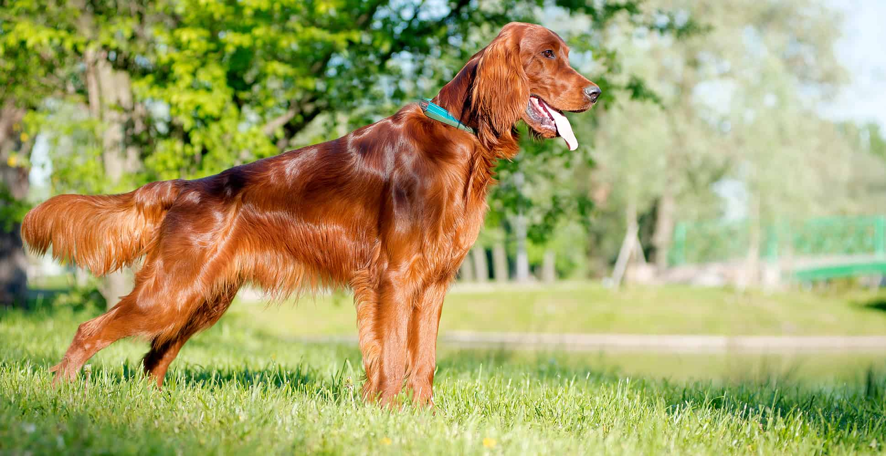
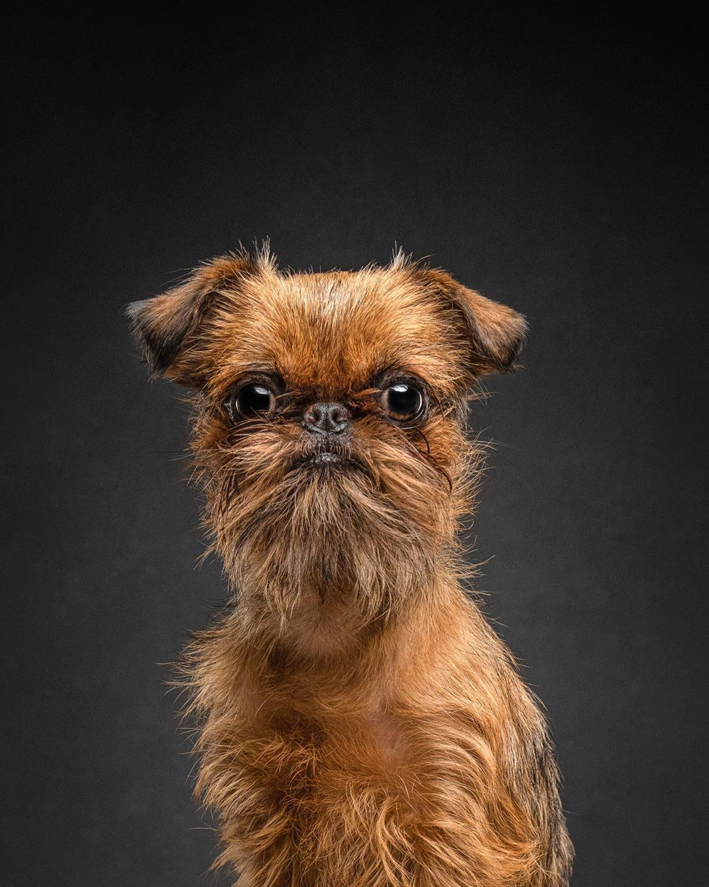
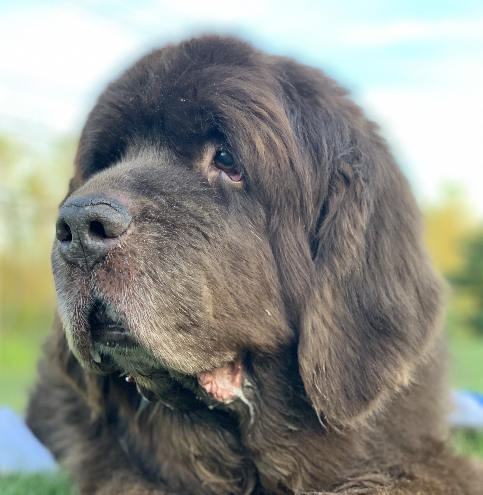

| Image |
Name |
Description |
 |
Labrador-Retriever |
They are very active and energetic. Very social dogs that are friendly and outgoing. |
 |
Bulldog |
Not the most active dog, but still requires regular exercise. Calm corageous and friendly dogs. |
 |
Golden Retriever |
Like the Labrador-Retriever they are Very active. Not only are they friendly and loyalthey are one of the most intelligent dog breeds. |
 |
Beagle |
A happy, active and curious dog. Also being very active like the Golden Retriever.. |
 |
Pug |
Even-tempered, charming, mischiecous and loving dogs. Not the most active but this dog still needs to exercise frequently. |
|  |
Irish Setter |
Outgoing, active, and easily trainable. Needs plent of exercise because of high energy levels. |
|  |
Brussels Griffon |
A hearty, intelligent and active dog.Like the Pug it is somewhat active but still needs regular exercise. |
|  |
Newfoundland |
Sweet, patient, loyal and intelligent dogs. Somewhat active because of their big size they still need a lot of exercise. |
 |
French Bulldogs |
Playful, smart and adaptable. Like the pugs and beagle, they are small and short dog breeds. These dog breeds aren't active but that does not mean they don't need exercise. |
 |
Collie |
Graceful, loyal and proud. Amazing herding dogs since they are incredibly active and athletic. |